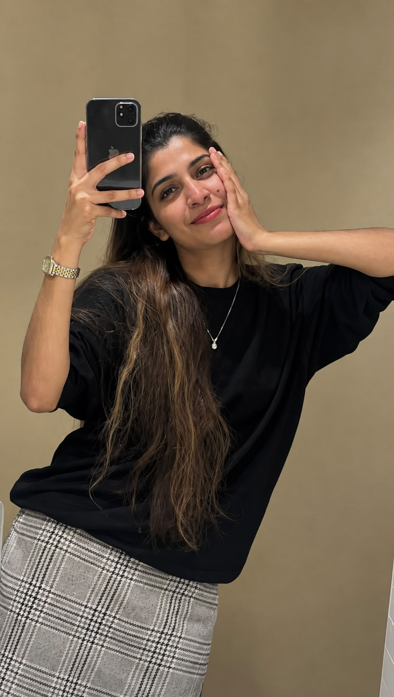

GET TO KNOW ME
About Me
Discover my background, passion and journey in technology.
Hello, I'm THARUSHIKA GIMHANI CROOS.
I am an aspiring System Developer with a strong interest in software development, information technology, and artificial intelligence.
I am currently studying AI Programming and continuously developing my technical knowledge through academic studies and practical projects.
I enjoy learning new technologies, solving problems, and transforming ideas into useful digital solutions.
My goal is to become a skilled System Developer and contribute to creating reliable, efficient, and innovative software solutions.
My Passion
Technology, programming and innovation.
My Mindset
Continuous learning and problem-solving.
My Goal
Becoming a professional System Developer.

MY STORY
My Journey
From Sri Lanka to Japan, building my future through education and technology.
My Roots – Sri Lanka
I was born and raised in Sri Lanka, where my educational journey began. My early education helped me build a strong foundation for my future.
A New Chapter – Japan
I moved to Japan to explore new opportunities, improve my Japanese language skills, and pursue my educational goals.
My Technology Journey
I began studying AI Programming and developing practical skills in software development, programming, and database technologies.
My Future Vision
My ambition is to become a professional System Developer and create meaningful technology solutions.